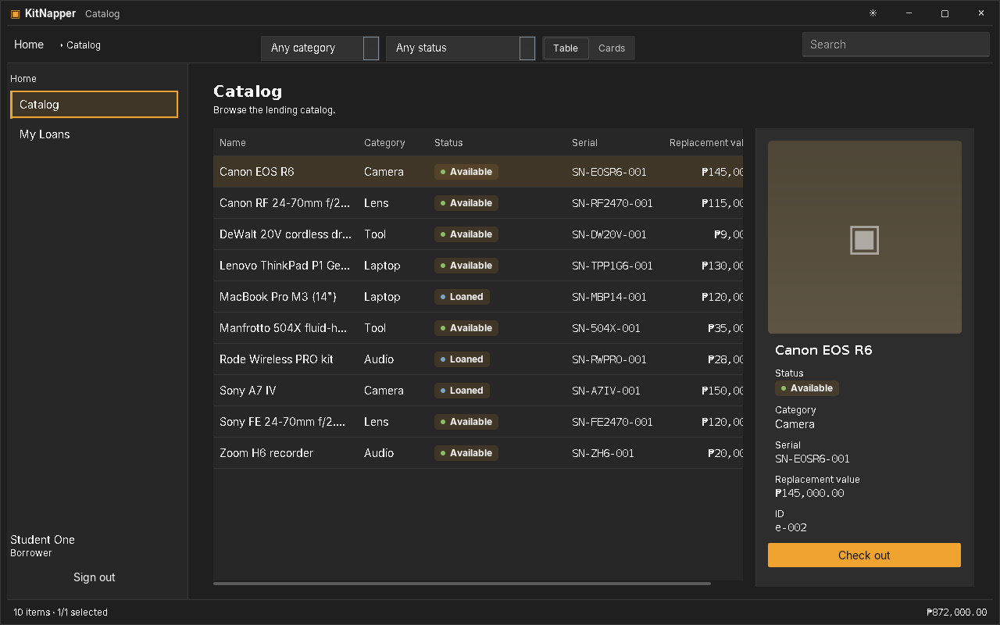

<section class="slide">
  <div class="kicker">Demo &middot; borrower</div>
  <div class="rule"></div>
  <h2>Search, check the limit, take the gear.</h2>

  <div class="row">
    <div style="width: 326pt">
      <ul class="steps">
        <li><span class="num">01</span> Wrong password &mdash; rejected inline, no session.</li>
        <li><span class="num">02</span> Sign in as <code>student1@institution.edu</code>; the catalog arrives filtered and searchable.</li>
        <li><span class="num">03</span> Pick the Canon EOS R6: the preview shows status, serial and replacement value.</li>
        <li><span class="num">04</span> The due date offers <b>T&nbsp;&hellip;&nbsp;T+14</b> only &mdash; a fifteenth day cannot be entered.</li>
        <li><span class="num">05</span> Confirm: the row flips to <b>LOANED</b> at once and Check out disables itself.</li>
        <li><span class="num">06</span> Relaunch &mdash; the loan is still there.</li>
      </ul>
    </div>
    <div style="width: 500pt">
      <div class="shot"></div>
      <div class="caption">Catalog &middot; 7 available, 3 on loan, availability lock on the preview</div>
    </div>
  </div>
  <div class="footer"><span>Borrower sees Catalog and My Loans only</span><b>03</b></div>
</section>
